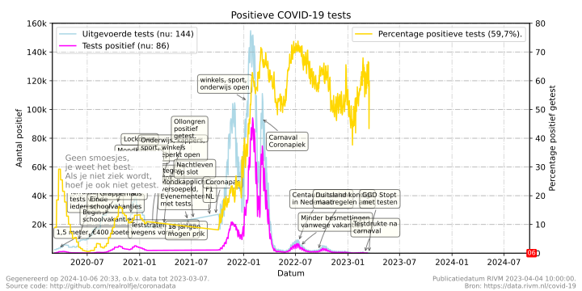
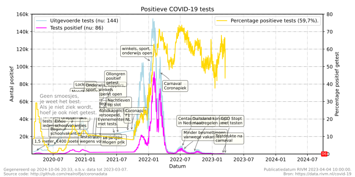
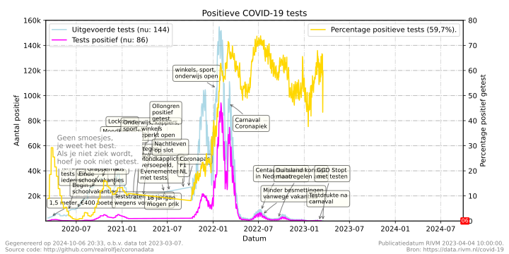

Geen smoesjes, je weet het best:
Houd afstand, werk thuis, was je handen, vermijd drukke plaatsen.
De belangrijkste basisregels vind je op rijksoverheid.nl.
Voorlopig vaccinatieschema
Installeren van de coronamelder app en/of afgeven van je contactgegevens in de
horeca is niet
verplicht.
Dragen van een mondkapje (ja, ook over je neus) is alléén verplicht in
openbare binnenruimtes.
Je mag s'avonds tussen 21.00 en 04.30 uur niet op straat zonder een geldig formulier.
2021-03-04 12:55

Data in deze grafieken is afkomstig van het RIVM (Rijksinstituut voor Volksgezondheid en Millieu) en Stichting NICE (Nationale Intensive Care Evaluatie). Wil je meer weten over hoe deze grafieken tot stand kwamen, zie de broncode. De lijst met events in de grafieken vind je hier.